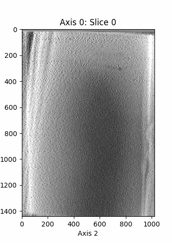

visualize-voxels
This project is hosted on GitHub.

I spend a lot of time working with cryo-electron tomograms. They’re huge, noisy, three-dimensional images that can take up gigabytes of storage apiece.
Naturally, visualizing these images is a pain—most of the options are desktop applications like IMOD. napari is marvelous, but heavier than I usually need. All the time I found myself in a Jupyter notebook working doing data analysis on tomograms and I just wanted a quick snapshot of what the volume looks like, perhaps with a couple keypoints marked. And I wanted it to be dead-simple, so that with a single function call and a few seconds I could see what sort of image I was working with. So I wrote visualize_voxels.
It was my first time writing a Python library. Really, calling it a library is a stretch, because it only delivers to the user one function (visualize). But because I work in many environments (on my laptop, in online Jupyter notebooks, through SSH on BYU’s supercomputer), I wanted it to be easily installable via pip.
The result was exactly what I needed. Given a NumPy array of scalars arr, simply calling visualize(arr) produces a visualization like the one displayed below in seconds—quick, simple, effective. Then I started adding other useful features, like the ability to mark points in the volume, and change the size, speed, and resolution of the visualization, among other little things. I made it work seamlessly in both .py scripts as well as notebooks.

This code (which leverages tomogram_datasets as well) visualizes the tomogram with the third-largest number of flagellar motors in our supercomputer:
from tomogram_datasets import all_fm_tomograms
import numpy as np
from visualize_voxels import visualize as viz
tomos = all_fm_tomograms()
n_flagellar_motors = [len(tomo.annotation_points()) for tomo in tomos]
super_tomo = tomos[np.argsort(n_flagellar_motors)[-3]]
viz(
super_tomo.get_data(),
marks=super_tomo.annotation_points(),
markalpha=0.5,
axis=0,
slices=np.linspace(80, 320, 100),
fps=16
)Try playing with it here.